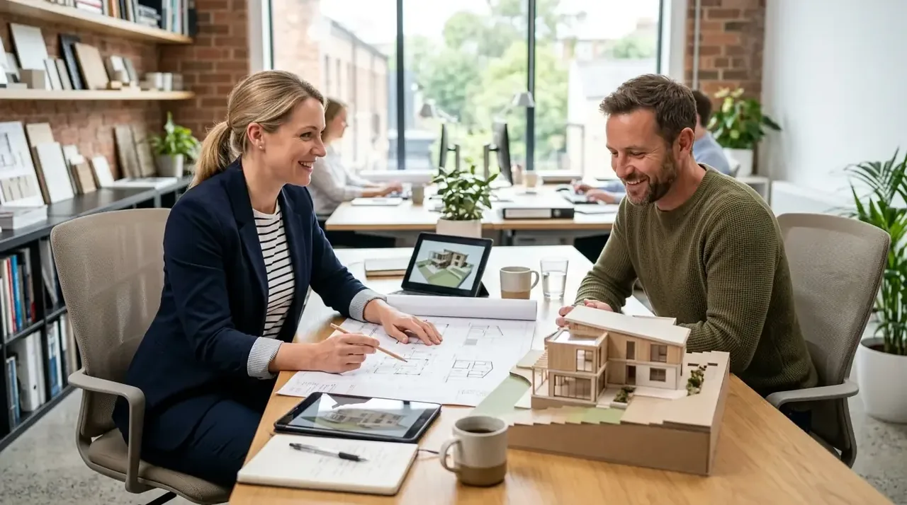

1. Mengapa Memilih Kontraktor Bangunan Profesional di Wilayah Madiun?
Membangun bersama kontraktor resmi memberikan ketenangan pikiran, garansi kualitas struktur, dan efisiensi waktu pelaksanaan proyek.
Kami merancang hunian bernuansa tropis modern yang adaptif terhadap iklim lokal Madiun dengan plafon tinggi dan bukaan sirkulasi silang. Struktur bangunan diperhitungkan sesuai standar ketahanan gempa SNI 1726.
Bagi warga Madiun yang sedang merantau di luar kota atau luar pulau, layanan dokumentasi online mingguan kami memberikan transparansi penuh tanpa harus repot bolak-balik meninjau lokasi proyek.
- Pondasi Batu Kali: Untuk rumah 1 lantai di tanah keras Madiun, pondasi batu belah menerus dengan campuran 1PC:4PP sudah sangat kokoh dan ekonomis.
- Ventilasi Plafon: Suhu udara siang hari di Madiun cukup hangat; buat ventilasi udara pada kisi-kisi sopi-sopi atap untuk membuang panas terperangkap.
- Pilih Kontraktor SPK: Pastikan kontraktor menyediakan Surat Perjanjian Kerja resmi dengan klausul masa retensi garansi tertulis.
2. Cakupan Layanan Konstruksi di Kota & Kabupaten Madiun
Layanan mencakup pembangunan rumah tinggal baru, ruko komersial, perombakan renovasi total, hingga bangunan fasilitas usaha.
Wilayah operasional kami menjangkau seluruh area Kota Madiun (Kecamatan Kartoharjo, Manguharjo, Taman) serta Kabupaten Madiun (Caruban, Mejayan, Jiwan, Geger, Wungu, Balerejo) hingga perbatasan Magetan dan Ngawi.

Proses pekerjaan pondasi dan pengecoran sloof beton bertulang rumah tinggal di Madiun.
3. Tabel Komparasi: Kontraktor Resmi vs Mandor Harian di Madiun
Tabel perbandingan keamanan investasi pembangunan di wilayah Karesidenan Madiun.
Tabel berikut memperlihatkan perbandingan antara menggunakan jasa kontraktor berbadan hukum dengan sistem tukang harian konvensional.
| Parameter Penilaian | Tukang / Mandor Harian Tradisional | Kontraktor Bangunan Profesional |
|---|---|---|
| Dokumen Kontrak (SPK) | Hanya janji lisan tanpa ikatan hukum sah | Kontrak resmi bermaterai lengkap dengan gambar teknis DED |
| Kepastian Total Biaya | Sering overbudget hingga 30% - 50% dari rencana | Biaya fix price terikat sesuai BoQ yang telah disetujui |
| Ketepatan Waktu Kerja | Rawan molor berbulan-bulan karena absensi tukang | Jadwal terkontrol Kurva S dengan target serah terima pasti |
| Jaminan Garansi Purna Jual | Tukang sulit dihubungi jika terjadi retak/bocor | Sertifikat masa retensi perbaikan gratis selama 6-12 bulan |
| Bantuan Perizinan PBG | Tidak menguasai gambar arsitektur standar SIMBG | Pendampingan penuh hingga sertifikat izin PBG resmi terbit |
4. Alur Pelaksanaan Transparan Bebas Biaya Tersembunyi
Setiap tahapan kerja dikontrol melalui Rencana Anggaran Biaya (RAB) terperinci dan pengawasan mandor berpengalaman.
Klien menerima rincian volume material dan upah kerja yang transparan. Pembayaran dilakukan bertahap sesuai prestasi kerja riil, dilengkapi masa pemeliharaan garansi fisik selama 6 hingga 12 bulan.
Pertanyaan yang Sering Diajukan (FAQ)
Kesimpulan Praktis
Wujudkan bangunan impian Anda di Madiun bersama mitra kontraktor yang berpengalaman, berintegritas, dan menjamin kepuasan hasil akhir.
Konsultasikan denah dan anggaran Anda hari ini bersama tim Kontraktor Bangunan. Hubungi kami via WhatsApp untuk survei kavling dan estimasi RAB gratis.